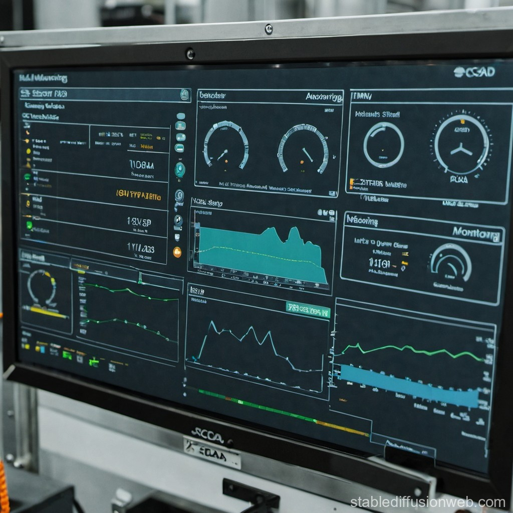
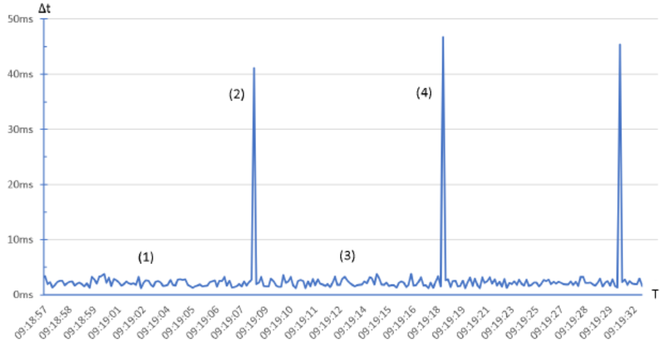

Mini PdM Monitor
A Raspberry Pi and Arduino-based predictive maintenance system that monitors motor vibration and temperature, flagging anomalies before equipment failure occurs.
View on GitHub
A Raspberry Pi and Arduino-based predictive maintenance system that monitors motor vibration and temperature, flagging anomalies before equipment failure occurs.
View on GitHub
A browser-based SCADA-style dashboard built with HTML5, CSS3, and JavaScript that visualises simulated plant data in real time using charts and status indicators.
View Live Demo
A time-series data logging system that captures sensor readings at regular intervals, stores them in a local database, and displays trends using Grafana-style visualisations.
Grafana Live Demo
A simple Arduino-based temperature monitoring circuit using a DHT11 sensor, with readings displayed on an LCD and transmitted to a serial monitor for logging.
Arduino Project Hub